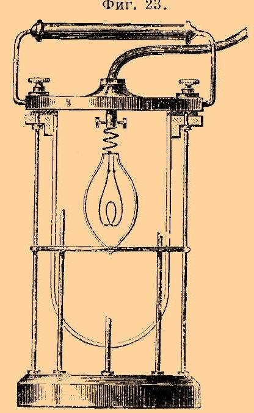
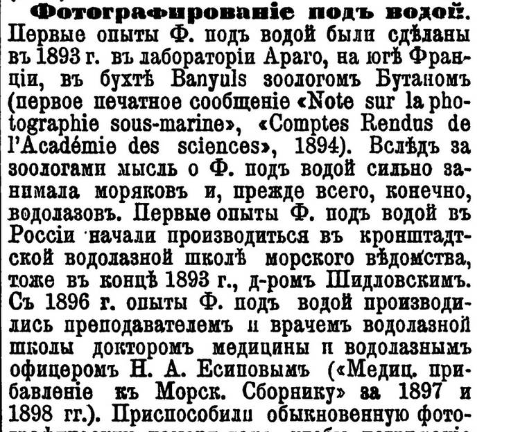

Камера в баке
Читается подряд. Нажми на удар — откроется подробный разбор с источниками.
В 1882 году в Кронштадте открыли Водолазную школу — готовить для флота водолазов, офицеров и нижних чинов, к судовым и подводным минным работам.Узнать подробнееСвернуть
Школу учредили указом 23 апреля (5 мая) 1882 года. Для занятий зимой у неё был «особый чан достаточных размеров» — школьный бак, в котором позже и начнут снимать. С 1885 года школой более десяти лет заведовал Н. М. Оводов, с 1896-го — А. А. Кононов. Школа стала центром водолазного дела всей России: здесь разрабатывали помпы, телефоны и освещение для водолазов.
Источники: А. Мельникова, «Основание и первые годы работы Кронштадтской Водолазной школы» и «Кронштадтская Водолазная школа в 1896–1906 годах» («Кронштадтский вестник»); ЭСБЭ, «Водолазное дело», т. VI (1892).
Водолазу на дне нужен свет, и в школе его делали сами: лейтенант Евгений Тверитинов построил подводный электрический фонарь.Узнать подробнееСвернуть

«Подводный электрический фонарь лейтенанта Тверитинова» — фигура 23 той же таблицы ЭСБЭ, 1892. Общественное достояние. Е. П. Тверитинов, офицер флота и потом профессор Электротехнического института, вместе со специалистами школы разработал систему подводного освещения. В той же статье ЭСБЭ описаны подводное освещение лейтенанта Колбасьева и электрическая лампа поручика Золотухина (Минный офицерский класс, Кронштадт, 1885), которую питали аккумуляторы вместо свинцовых грузов водолаза.
Источники: ЭСБЭ, «Водолазное дело», т. VI (1892), подписи к фиг. 9, 23, 24; «Кронштадтский вестник», «Кронштадтская Водолазная школа в 1896–1906 годах».
В конце 1893 года доктор школы Ф. Я. Шидловский начал первые в России опыты фотографирования под водой.Узнать подробнееСвернуть
По его проекту изготовили несколько фотобоксов — водонепроницаемых ящиков для камеры — и снимали в школьном баке при вспышке магния. Шидловский служил врачом школы с 1889 по 1896 год. «Первые опыты Ф. под водой в России начали производиться в кронштадтской водолазной школе морского ведомства, тоже в конце 1893 г., д-ром Шидловским», — сказано в энциклопедии.
Источники: ЭСБЭ, «Фотографирование под водой», т. XXXVI (1902), с. 400; «Кронштадтский вестник», «Кронштадтская Водолазная школа в 1896–1906 годах».
В том же 1893 году на юге Франции, в бухте Баньюльс, начал снимать под водой зоолог Луи Бутан.Узнать подробнееСвернуть
Бутан работал в морской лаборатории Араго и первым напечатал сообщение о подводной фотографии — «Note sur la photographie sous-marine» в «Comptes Rendus» Парижской академии наук в 1894 году. Его первый аппарат был медным ящиком с крышкой на резиновой прокладке и баллоном-компенсатором до 3 литров внутри. Снимки выходили «весьма неясные»: выдержка длилась от 20 до 30 минут.
Источник: ЭСБЭ, «Фотографирование под водой», т. XXXVI (1902), с. 400–401.
Трудностей под водой оказалось три: навести объектив на резкость почти невозможно, пластинку не сменишь, а вода не пропускает свет.Узнать подробнееСвернуть
«Наведение на фокус под водой дело крайне трудное и почти невыполнимое; поэтому надо брать аппарат с постоянным фокусом». Нужно было и приспособление, чтобы сделать несколько снимков, «не вынимая аппарата из воды». Подводный пейзаж «никогда не бывает в покое», а водолаз с каждым шагом поднимает облака ила, и долгая выдержка всё смазывает.
Источник: ЭСБЭ, «Фотографирование под водой», т. XXXVI (1902), с. 400–401.
Летом 1896 года на Всероссийской выставке в Нижнем Новгороде школа показала один подводный снимок Шидловского — пока единственный удачный.Узнать подробнееСвернуть
За свои экспонаты, среди которых была новая четырёхцилиндровая помпа мичмана Богдановича, школа получила диплом на золотую медаль. «Водолазный павильон привлекал все время много публики», — вспоминал Есипов. Снимок Шидловского был, по сути, единственным, достаточно удачным, чтобы выставить его.
Источник: «Кронштадтский вестник», «Кронштадтская Водолазная школа в 1896–1906 годах» (по запискам Н. А. Есипова к 25-летию школы, 1907).
Осенью 1896 года старшим врачом школы стал доктор медицины Николай Есипов, и подводная съёмка стала одной из главных задач школы.Узнать подробнееСвернуть
С приходом нового заведующего А. А. Кононова освоение подводного фотографирования вышло на одно из первых мест. «Разработке вот этого-то вопроса и было посвящено все свободное от учебных занятий время», — писал Есипов в 1897 году. Позже он сам прошёл курс школы и получил звание водолаза, а работал в ней почти до своей смерти в 1909 году.
Источники: «Кронштадтский вестник», «Кронштадтская Водолазная школа в 1896–1906 годах»; ЭСБЭ, «Фотографирование под водой» (Есипов — «доктор медицины и водолазный офицер»).
31 января 1897 года Есипов показал фотографирование под водой генерал-адмиралу, великому князю Алексею Александровичу.Узнать подробнееСвернуть
Генерал-адмирал — глава всего флота — приехал в Кронштадтскую водолазную школу, и в его присутствии доктор Есипов снимал в школьном баке.
Источник: «Кронштадтский вестник», «Кронштадтская Водолазная школа в 1896–1906 годах».
Весной 1897 года на выставке судоходства в петербургском «Аквариуме» школа выставила подводную камеру и снимки Есипова, сделанные при участии инженера-механика Леонида Родионова.Узнать подробнееСвернуть
Выставка шла с 8 марта по 11 апреля. «Школа экспонировала водолазные аппараты разных систем, подводную фотографическую камеру и подводные снимки, снятые в школьном баке д-ром Есиповым при участии инженера-механика Родионова». Для публики построили бак: в нём в известные часы спускались водолазы, а лекции по очереди читали Кононов и Есипов.
Источник: «Кронштадтский вестник», «Кронштадтская Водолазная школа в 1896–1906 годах».
Магний Есипов сменил на электричество: дуговую лампу Сименса силой до 300 свечей он ставил сбоку аппарата.Узнать подробнееСвернуть
Бутан тоже отказался от магния и взял две свои дуговые лампы по 20 ампер в чугунных футлярах, рассчитанных на 10 атмосфер; при выдержке 5 минут на глубине 6 метров он получил «весьма удовлетворительные снимки». «Если снимки Бутана и немного лучше снимков Есипова, то вся разница зависит единственно от разницы в силе источника света». Вода поглощает лучи: даже на глубине 10 метров в чистой воде предмет в 50–60 метрах от объектива не оставляет на пластинке ничего. Прозрачнее всего вода зимой, мутнее всего в июле.
Источник: ЭСБЭ, «Фотографирование под водой», т. XXXVI (1902), с. 401.
Есипов не знал о работах Бутана и самостоятельно проделал всё то, что делал и Бутан.Узнать подробнееСвернуть
Находка дняКнига Бутана «La photographie sous-marine» вышла только в 1900 году, а в Кронштадте ту же дорогу — футляр, постоянный фокус, магний, потом дуговая лампа — прошли своим умом. Эти слова напечатаны в статье «Фотографирование под водой» Энциклопедического словаря Брокгауза и Ефрона, и подписана она инициалами «Н. А. Е.»: статью о себе и о Бутане написал сам Николай Анемподистович Есипов.
Источники: ЭСБЭ, «Фотографирование под водой», т. XXXVI (1902), с. 401, подпись «Н. А. Е.»; расшифровка подписи — список авторов ЭСБЭ в Викитеке («Н. А. Е.» — Николай Анемподистович Есипов).
Осенью 1898 года на фотографической выставке Русского технического общества в Соляном городке подводные снимки школы получили диплом и благодарность.Узнать подробнееСвернуть

Начало статьи «Фотографирование под водой»: ЭСБЭ, т. XXXVI, 1902, с. 400. Общественное достояние. «К этому уже времени у нас было изготовлено несколько подводных снимков с различных предметов», — писал Есипов. Публика прошла мимо скромного стенда, но «на экспонаты школы было обращено внимание печати, и они были удостоены диплома и благодарности». Свои опыты Есипов описал в «Медицинском прибавлении к Морскому сборнику» за 1897 и 1898 годы, а школа звала всех любителей фотографии работать в своей тёмной комнате.
Источники: «Кронштадтский вестник», «Кронштадтская Водолазная школа в 1896–1906 годах»; ЭСБЭ, «Фотографирование под водой», т. XXXVI (1902), с. 400.